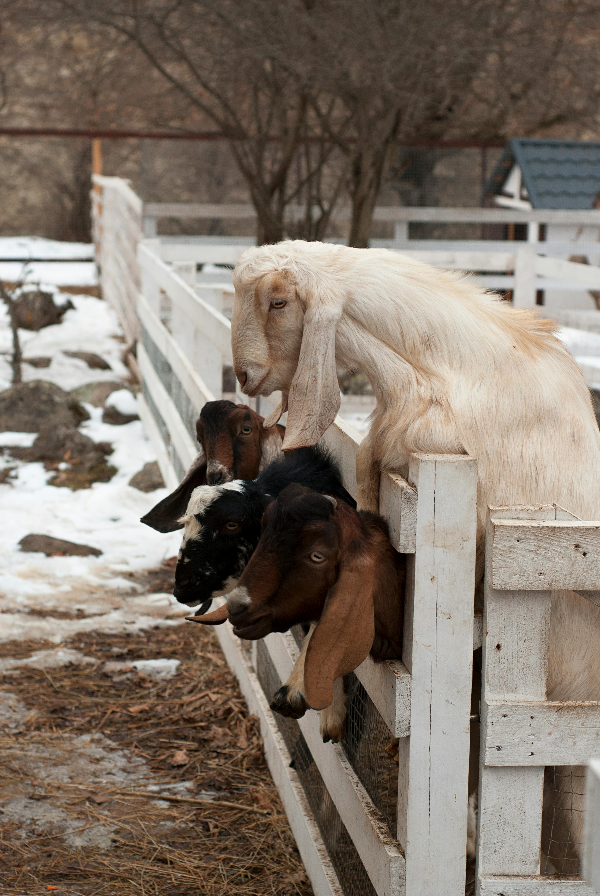
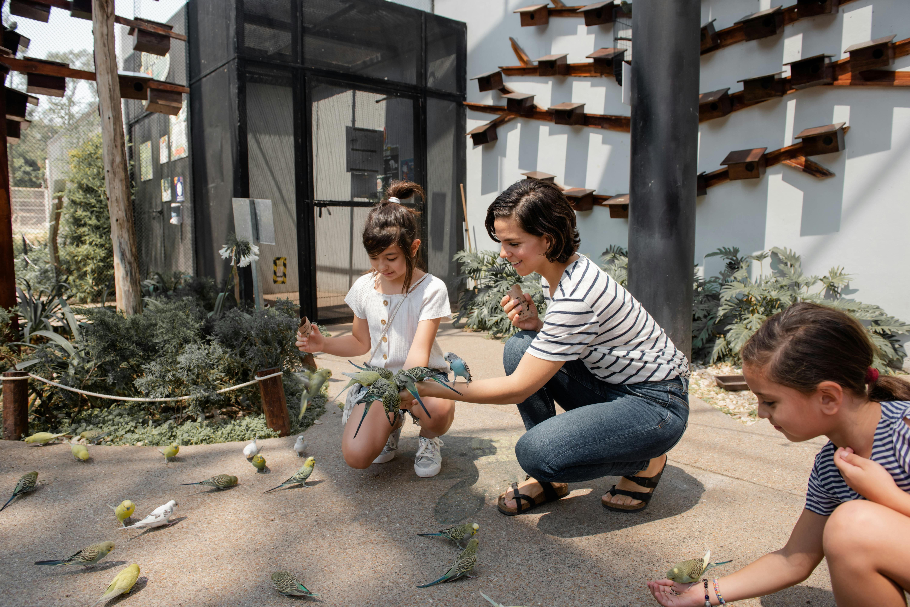

Galerie Photo

X

Notre Équipe
Jean Dupont
Vétérinaire en chef - S'occupe du bien-être et de la santé des animaux.

Sophie Martin
Responsable des soigneurs - Gère l'équipe de soigneurs et leur formation.

Léa Rousseau
Guide animalier - Partage ses connaissances avec les visiteurs du zoo.